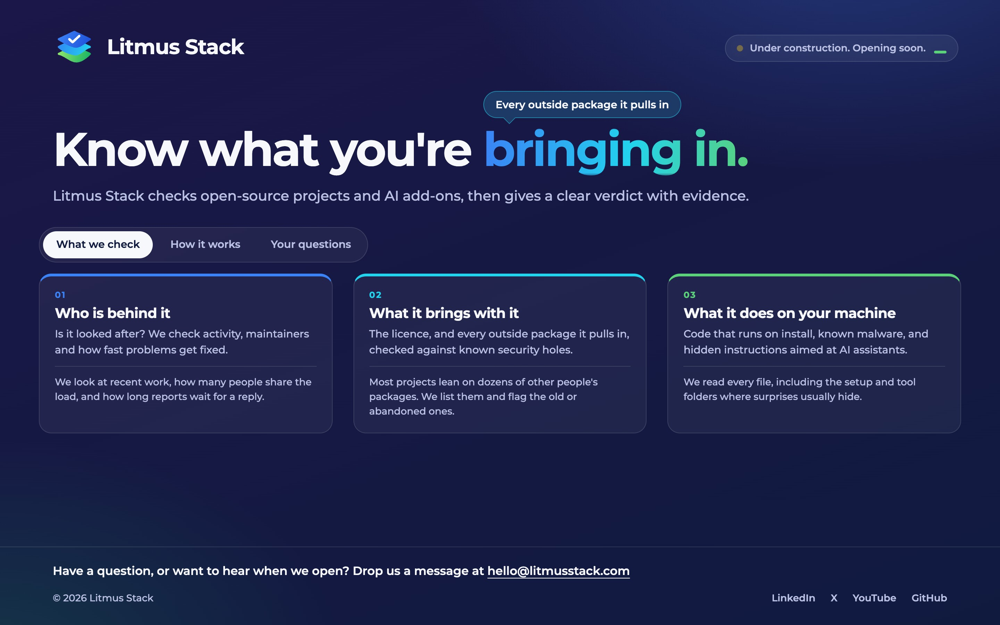

Litmus Stack
Opening soonKnow what you're installing: a plain-English check of any GitHub project for hidden attacks, known holes and neglect, with proof for every warning.
654 of 657planted attacks caught
83%caught in a sealed test set never seen while writing rules
0false alarms across 91 clean projects
8package ecosystems checked for known holes
What it does
One clear report
- Paste a GitHub link and get a full report in plain English.
- A health score out of 100 across seven areas, from activity to documentation.
- Explains the licence and what it allows, without legal jargon.
- A two-page summary for non-experts: answer first, then each warning with proof.
Finding hidden attacks
- Reads every file, even ones hidden inside archives.
- Spots download-and-run code, key theft, keystroke recording and fake installers.
- Catches instructions planted to trick AI coding assistants.
- Warns when a project uses parts under active attack right now.
- Checks whether a leaked key in the code still works.
Proof for every warning
- Shows the exact file and line, with the suspicious text safely quoted.
- Links to that line at the exact version checked.
- Says plainly what was not checked, and never calls anything "safe".
Measured, not claimed
- A scoreboard of planted attacks and known-clean projects tracks catch and false-alarm rates.
- A sealed test set is kept unseen while rules are written.
- Malware samples run only in a walled-off lab, never on my own Mac.
Screenshots

How it works
- You paste a GitHub link
- It reads every file, not a sample
- It checks upkeep, the licence, outside packages and risky code
- You get a plain-English report with the evidence behind every finding